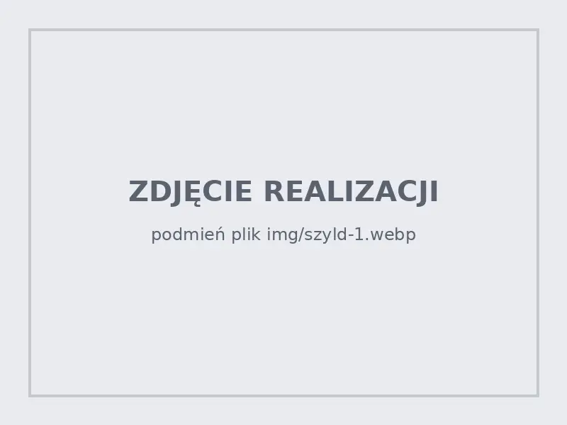
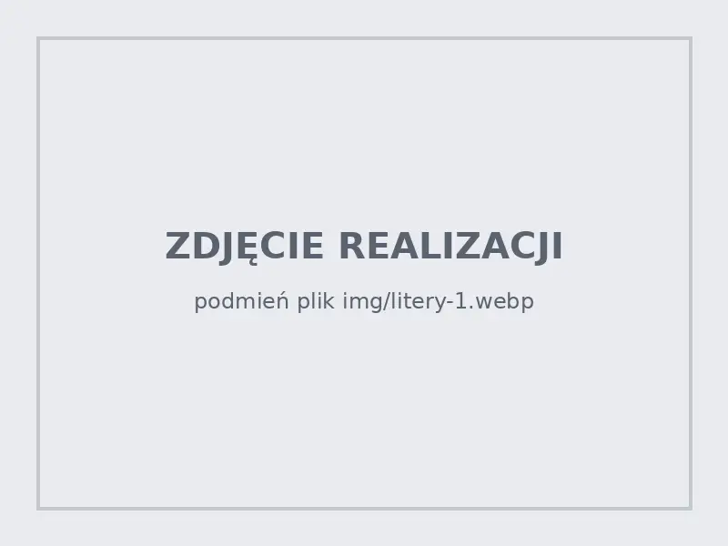
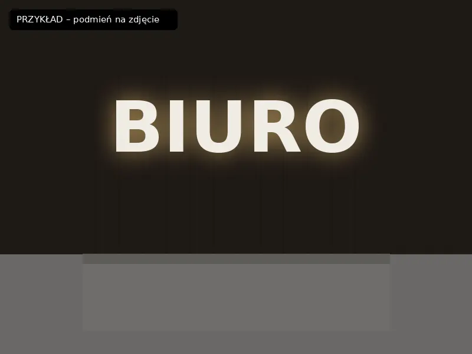

Szyldy reklamowe – realizacje w Gdyni
Na tej stronie pokazujemy nasze szyldy reklamowe – realizacje z Gdyni i okolic, czyli zdjęcia wykonanych i zamontowanych szyldów, liter przestrzennych oraz reklam LED. Przy każdej realizacji opisujemy, co zrobiliśmy, z jakich materiałów i w jakiej części miasta. To dobry punkt wyjścia dla właścicieli sklepów, lokali usługowych, gabinetów i biur, którzy chcą zobaczyć gotowe efekty, zanim zamówią oznakowanie.
Szyldy reklamowe – realizacje w Gdyni według kategorii
Galerię podzieliliśmy na kategorie, żeby łatwo było znaleźć przykłady podobne do tego, czego potrzebujesz. Każde zdjęcie przedstawia rzeczywistą realizację – bez wizualizacji i zdjęć ze stocków.
- Szyldy reklamowe – płaskie szyldy na elewację, kasetony, tablice przy wejściu, oznakowanie witryn. Więcej o tej usłudze: szyldy reklamowe Gdynia.
- Litery przestrzenne – logo i napisy 3D, nieoświetlone i podświetlane, montowane na elewacji, ścianie w lokalu lub na konstrukcji. Szczegóły: litery przestrzenne Gdynia.
- Reklama LED – podświetlane kasetony, litery z diodami LED, neony LED i oznakowanie widoczne po zmroku. Zobacz: reklama LED Gdynia.
[UZUPEŁNIJ: liczba realizacji w każdej kategorii lub informacja, jak często dodajecie nowe zdjęcia]
Galeria: szyldy reklamowe


Galeria: litery przestrzenne


Galeria: reklama LED


Co znajdziesz w opisie każdej realizacji
Samo zdjęcie nie mówi wszystkiego. Dlatego pod każdą realizacją podajemy krótki, konkretny opis, który pomaga ocenić, czy podobne rozwiązanie sprawdzi się u Ciebie:
- Co wykonaliśmy – rodzaj oznakowania, wymiary, liczba elementów.
- Gdzie – dzielnica Gdyni lub ulica (podajemy ją tylko za zgodą klienta), np. Śródmieście, Redłowo, Orłowo, Chylonia.
- Z czego – użyte materiały, rodzaj podświetlenia, sposób montażu.
- Zakres prac – projekt, produkcja, montaż, demontaż starego szyldu, ewentualna pomoc przy formalnościach.
Przykładowy opis realizacji:
- Klient / branża: [UZUPEŁNIJ: np. kawiarnia, salon fryzjerski]
- Lokalizacja: [UZUPEŁNIJ: dzielnica lub ulica – za zgodą klienta]
- Wykonanie: [UZUPEŁNIJ: np. litery przestrzenne podświetlane LED, wymiary]
- Materiały: [UZUPEŁNIJ: np. plexi, dibond, profil aluminiowy]
- Czas realizacji: [UZUPEŁNIJ: od akceptacji projektu do montażu]
Z jakich materiałów wykonujemy szyldy i reklamy
Dobór materiału zależy od miejsca montażu, ekspozycji na słońce i wiatr oraz od tego, czy reklama ma być widoczna również wieczorem. W nadmorskim klimacie Gdyni szczególnie ważna jest odporność na wilgoć i sól w powietrzu.
- Dibond (płyta kompozytowa) – sztywny, lekki, odporny na warunki atmosferyczne, dobry na szyldy płaskie.
- Plexi (PMMA) – do liter przestrzennych i elementów podświetlanych, dobrze rozprasza światło.
- PCV spienione – ekonomiczna opcja, głównie do wnętrz i oznakowania wewnętrznego.
- Profile aluminiowe i stal – do kasetonów, konstrukcji i liter o podwyższonej trwałości.
- Moduły i taśmy LED – energooszczędne podświetlenie liter i kasetonów.
[UZUPEŁNIJ: potwierdź listę materiałów, z którymi faktycznie pracujecie, i dopisz ewentualne folie, producentów LED itp.]
Jak wygląda współpraca i od czego zależy cena
Każda realizacja z galerii przeszła podobną drogę:
- Kontakt i wycena wstępna – przesyłasz zdjęcie elewacji lub miejsca montażu, wymiary i logo.
- Projekt – przygotowujemy wizualizację na zdjęciu Twojego budynku lub lokalu.
- Akceptacja i produkcja – po zatwierdzeniu projektu wykonujemy oznakowanie.
- Montaż – instalujemy szyld na miejscu, podłączamy podświetlenie, w razie potrzeby demontujemy stary.
Na cenę wpływają przede wszystkim: wielkość i liczba elementów, rodzaj materiału, podświetlenie LED lub jego brak, wysokość i trudność montażu (np. konieczność użycia podnośnika) oraz stopień skomplikowania projektu. Orientacyjne stawki znajdziesz w cenniku. [UZUPEŁNIJ: czy wycena i projekt są bezpłatne]
Realizacje szyldów reklamowych w Gdyni i okolicy
Większość prezentowanych prac powstała w Gdyni – w różnych dzielnicach, od ścisłego centrum po osiedla mieszkaniowe. Wykonujemy też oznakowanie dla firm z pozostałej części Trójmiasta i powiatu.
Obszar działania: [UZUPEŁNIJ: np. Gdynia, Sopot, Gdańsk, Rumia, Reda, Wejherowo – potwierdź zasięg montażu]
Jeśli zobaczysz w galerii rozwiązanie, które Ci się podoba, napisz, o którą realizację chodzi – przygotujemy podobny projekt dopasowany do Twojej elewacji, kolorów i budżetu. Dane kontaktowe znajdziesz na stronie kontakt.
Pytania i odpowiedzi
Ile kosztuje szyld reklamowy podobny do tych z galerii?
Cena zależy od wymiarów, materiału, podświetlenia i warunków montażu, dlatego dwa podobnie wyglądające szyldy mogą różnić się kosztem. Orientacyjne ceny są w cenniku, a dokładną wycenę przygotujemy po otrzymaniu zdjęcia miejsca montażu i wymiarów. [UZUPEŁNIJ: cena od / przykładowy przedział]
Ile trwa wykonanie i montaż szyldu?
Czas zależy od rodzaju oznakowania i aktualnego obłożenia pracowni. Prosty szyld płaski powstaje szybciej niż litery przestrzenne z podświetleniem LED. [UZUPEŁNIJ: typowy czas realizacji od akceptacji projektu]
Czy zajmujecie się montażem na elewacji?
Tak, montaż jest częścią naszych realizacji – instalujemy szyldy, litery i kasetony na miejscu oraz podłączamy podświetlenie. Przy montażu na wysokości dobieramy odpowiedni sprzęt. [UZUPEŁNIJ: czy montaż na wysokości / podnośnik jest w cenie]
Jaką gwarancję dajecie na szyldy i podświetlenie LED?
Gwarancja obejmuje wykonanie oraz zastosowane elementy, w tym podświetlenie. Szczegółowe warunki ustalamy przy zamówieniu. [UZUPEŁNIJ: okres gwarancji na wykonanie i na LED]
Czy na szyld potrzebna jest zgoda?
Często tak – zgody może wymagać zarządca lub wspólnota budynku, a w niektórych lokalizacjach także przepisy miejskie lub konserwator zabytków. Warto to sprawdzić przed zamówieniem. [UZUPEŁNIJ: czy pomagacie w formalnościach i przygotowaniu projektu do zgłoszenia]
Czy mogę zobaczyć realizację na żywo?
Przy części realizacji podajemy dzielnicę lub ulicę – robimy to wyłącznie za zgodą klienta, więc takie szyldy można obejrzeć osobiście. Jeśli interesuje Cię konkretny typ oznakowania, zapytaj, gdzie w Gdyni możesz zobaczyć podobny przykład.
Zapytaj o wycenę
Spodobała Ci się któraś realizacja? Wyślij nam zdjęcie swojej elewacji, a przygotujemy projekt i wycenę szyldu dla Twojej firmy w Gdyni.